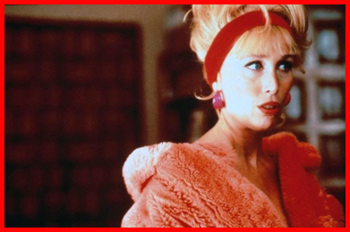
Verónica Forqué - Kika
Victoria Abril - Andrea Caracortada
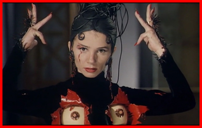
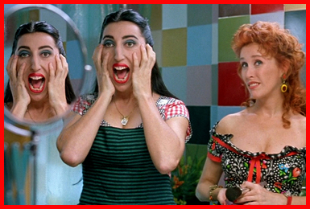
Bibiena Fernández - Susana
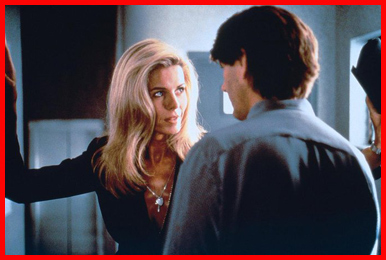
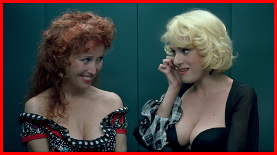
Anabel Alonso - Amparo
Nicholas
Ramón
Pablo (Paul Bazzo)
Policeman 1
Policeman 2
Rafaela
Dña. Paquita
Paca Joaquín
Asesino
Asesinada
Modelo
Agustín Almodóvar - Door Repairman
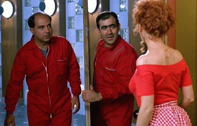
Kika, a naïve make-up artist, recalls how she met her lover Ramón. She had given her phone number to his step-father, American writer Nicholas Pierce, and he had called her not for sex as she had hoped but to make up the younger man's corpse. He was however merely catatonic and suddenly awoke. Ramón is a fashion photographer with voyeuristic tendencies who was traumatised by his mother's suicide after several attempts. He lets Nicholas, who has returned to Madrid, live above their flat and the two discuss whether to sell the family home outside of town, Casa Youkali, which they jointly own. Ramón proposes to Kika, who accepts but feels conflicted as she has been cheating on him with Nicholas.
Nicholas is working on a novel about a lesbian serial killer, but he makes ends meet by freelancing discreetly for an outrageously exploitative television show which focuses on bizarre and macabre events. The show is devised and presented by Andrea Caracortada ("Andrea Scarface"), who wears over-the-top outfits (designed by Jean-Paul Gaultier) and a persona to match. Andrea used to be a psychologist, and Ramón was once her patient, then her lover. He tells Nicholas that she scarred her own face when he left her and she is now stalking him. On her show, Andrea reports that Paul Bazzo, a dim-witted sex maniac and former pornographic actor jailed for rapes has escaped while attending a religious procession. He turns up at Ramón and Kika's flat because their maid Juana is his long-suffering sister. Juana instructs him to tie her up, knock her unconscious and steal valuables, then hide at a cousin's place. Paul however finds Kika napping and rapes her at knife point. An unseen voyeur peeping at Kika's room notifies the police and two incompetent inspectors eventually turn up, shoot up the door and with great difficulty interrupt the rape. Paul escapes and bumps into Andrea, kitted out in a futuristic reporter's outfit complete with helmet-mounted video camera. She wants an interview but he pushes her off and steals her motorcycle. She then enters the flat and harasses Kika. The police are puzzled at her presence, because although they often tip her off, they did not in this case. Andrea credits an unknown peeping tom for alerting her and broadcasts video footage of the rape on her show, causing Kika to break down.
In the aftermath, Kika finds Ramón to be no help and she overhears him confess to Nicholas that it was he who called the police: he liked to peep on her from his photographic studio's window. She leaves him in silence, as does a guilt-wracked Juana who confesses her part in the rape. Ramón meanwhile also tells Nicholas that he has held on to his mother's diaries but never found the strength to read them. He does so however, after Nicholas has moved back to Casa Youkali, and discovers that the farewell letter to him that Nicholas had passed on was actually ripped from an earlier entry in the diary. Ramón confronts Nicholas and accuses him of murdering his mother.
Meanwhile, it turns out that Andrea and Ramón both spied on the flat from separate addresses. While reviewing footage of the upper floor, Andrea realises that Nicholas appears to have murdered one of his several girlfriends, Susana when she visited him. Connecting this to his latest book, she also goes to Casa Youkali armed with a pistol and finds a freshly dug grave in the garden. Nicholas barricades himself but she breaks in aggressively and offers to interview him and let him run away before the broadcast. They fight and shoot each other. Kika also turns up and Nicholas confesses with his dying breath that his novel about a lesbian serial killer is really a disguised autobiography, as Andrea had worked out. Kika also finds the bodies of Andrea, Susana and Ramón, but she is able to resurrect the latter a second time with electric shocks. Ramón had gone into shock after finding Susana's body in the bathroom.
While Ramón is taken to hospital, Kika picks up a stranded motorist and takes an instant interest in him, stating that she might need a new direction.
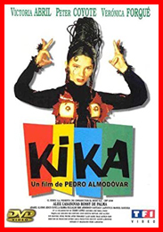
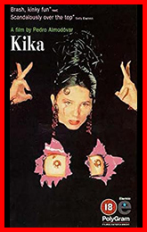
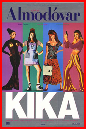
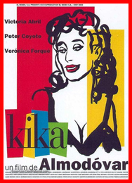
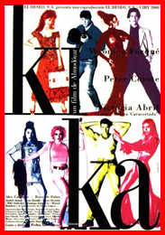